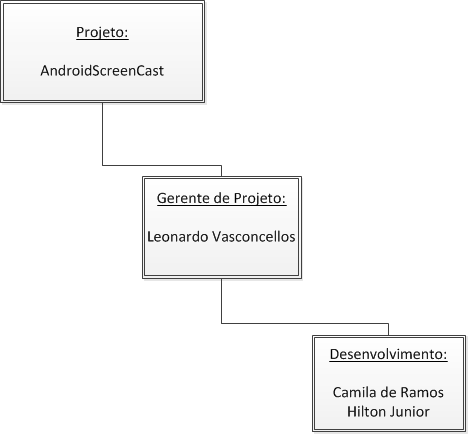
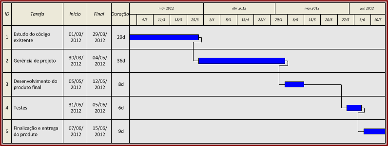

Robot é um fork do projeto androidscreencast, cujo objetivo é visualizar a tela e controlar remotamente um dispositivo Android a partir do Desktop.
Veja o projeto no GitHub DevHouse-BR/Robot


10 de maio de 2012
Plano de Projeto
por Todos
Análise das reclamações e sugestões feitas via a lista de discussão.

A análise de riscos visa identificar uma série de possíveis acontecimentos que, de alguma forma, podem afetar o andamento ordenado do projeto. Depois de identificados todos os riscos, foi realizada uma análise para identificar a probabilidade destes e seu efeito sobre o desenvolvimento do projeto. Ao final, estabeleceram-se métodos para garantir o contorno dos fatos que geraram a instabilidade do desenvolvimento.
Identificação dos riscos:
|
Risco |
Afeta |
Descrição |
|
Limitação de bibliotecas de software |
Produto |
Não existem bibliotecas de software disponível para desenvolvimento de algum módulo do produto |
|
Rotatividade de pessoal |
Projeto |
Saída de pessoal envolvido diretamente no projeto |
|
|
|
|
|
Tempo insuficiente |
Projeto e Produto |
Não haverá tempo suficiente para conclusão do projeto |
|
Incompatibilidade de Ferramentas CASE |
Projeto |
As ferramentas CASE necessárias são incompatíveis com o sistema utilizado |
Análise dos riscos:
|
Risco |
Probabilidade |
Efeitos |
|
Limitação de bibliotecas de software |
Baixo |
Sério |
|
Rotatividade de pessoal |
Moderado |
Sério |
|
Tempo insuficiente |
Moderado |
Catastrófico |
|
Incompatibilidade de Ferramentas CASE |
Baixo |
Tolerável |
Estratégia de contingência dos riscos:
|
Risco |
Contingência |
Minimização |
Prevenção |
|
Limitação de bibliotecas de software |
Desenvolver as bibliotecas imprescindíveis ao desenvolvimento do produto |
|
|
|
Rotatividade de pessoal |
Recrutar novo colaborador com experiência no projeto em questão |
Distribuir as tarefas afetadas aos outros membros da equipe |
|
|
Tempo insuficiente |
Verificar a possibilidade de automatização de algumas etapas e eliminar processos menos importantes |
Aumentar a jornada de empenho no projeto, dedicando mais horas por semana no seu dsenvolvimento |
Dedicar mais tempo no planejamento do cronograma de atividades |
|
Incompatibilidade de Ferramentas CASE |
Verificar a possibilidade de desenvolvimento sem o suporte das mesmas |
|
|
Durante o processo de criação e desenvolvimento do projeto, alguns recursos se fazem necessários. Abaixo a tabela descritiva destes recursos:
|
Ferramenta |
Descrição |
|
Ambiente de Desenvolvimento |
NetBeans IDE/Notepad++ |
|
Java |
Linguagem de Programação |
|
GitHub |
Repositório e versionamento |
|
Sistema Operacional |
Linux |
Tabela definindo nome e função de cada integrante da equipe:
|
Nome |
Função |
|
Camila de Ramos |
Documentação e Desenvolvimento |
|
Leonardo Vasconcellos |
Gerente de Projeto e Desenvolvimento |
|
Hilton Júnior |
Documentação e Testes |

PROCESSOS DO SOFTWARE

PROCESSOS DE TESTES

Testes de unidade: Componentes testados individualmente, podem ser funções, grupos, objeto.
Testes do sistema: Teste do sistema como um todo.
Teste de aceitação: Testes com os dados para verificar se os sistema atende aos requisitos propostos.
07 de maio de 2012
Feedback de Usuários
por Camila de Ramos
Análise das reclamações e sugestões feitas via a lista de discussão.


06 de maio de 2012
Introdução do Projeto
por Junior Bastos
O desenvolvimento de software é uma atividade de crescente importância na sociedade contemporânea. A utilização de dispositivos móveis nas mais diversas atividades do cotidiano da população tem gerado uma crescente demanda por soluções que viabilizam o uso produtivo dos mesmos.
Para a maioria dos estudantes de sistemas de informação, desenvolver um software é muitas vezes confundido com programar. Isso se explica pela maneira como estes são introduzidos nesta área, desenvolvendo habilidades de raciocínio logico, através de programação e estrutura de dados. Este conhecimento, apesar de ser muito importante, não deve ser tomado como primordial.
Entretanto chega-se a um ponto em que dado o tamanho ou a complexidade do problema que se pretende resolver, somente a programação não será suficiente. É então que a engenharia de software se torna necessária.
Este projeto visa contribuir para um projeto de software opensource (código fonte aberto). A contribuição será de adicionar novas funcionalidades e corrigir alguns bugs.
O software escolhido para contribuição é o AndroidScreenCast. Este software permite a utilização remotamente de qualquer dispositivo Android utilizando mouse e teclado. Como é escrito na linguagem Java, o mesmo deve funcionar em qualquer plataforma onde o SDK do Android suporta. O maior fim deste software é auxiliar os desenvolvedores da plataforma Android na hora de testar seus softwares, pois o emulador do SDK do Android é extremamente lento, o que o torna praticamente inútil no dia a dia do desenvolvedor.
Uma limitação do AndroidScreencast é o fato de necessitar do SDK do Android para o seu funcionamento. Mas é justamente isso que garante que ele funcione em qualquer dispositivo e plataforma.
Apesar das vantagens aqui expostas este software está com problemas para funcionar o mouse nas versões mais novas do Android devido a atualizações na API do sistema operacional. Sendo assim o principal objetivo deste projeto é atualizar o software para dar suporte as novas versões do sistema Android. Caso o objetivo principal seja alcançado em tempo hábil propomos também melhorar a interface e instalação do software para deixar o mesmo mais acessível para possíveis usuários não programadores.
05 de maio de 2012
Usando o shell do Git
por Leonardo Lima de Vasconcellos
Como o comentado no post Git GUIs, nem todos as interfaces gráficas para Git são boas e particularmente o RabbitVCS para Linux deixa um pouco a desejar, então para auxiliar o time de desenvolvimento vamos passar aqui alguns comandos básicos do Git em linha de comando. Os comandos abaixo foram testados no Linux Ubuntu 12.04 mas deve funcionar com qualquer versão do Linux e inclusive em outras plataformas usando o git bash.
Clonando um repositório
Considerando que o nome do repositório é Robot, crie um diretório chamado Robot, entre nele e execute o 'git init' que inicializará o repositório local do git e também criará a pasta .git.
{% highlight bash %} $ mkdir Robot $ cd Robot $ git init Initialized empty Git repository in /Home/User/Robot/.git/ {% endhighlight %}Pronto, o repositório está inicializado mas apenas localmente. Agora é preciso conectar o repositório local com o remoto para sincronia dos arquivos. Substitua username pelo seu nome de usuário do github.
{% highlight bash %} $ git remote add origin git@github.com:username/Robot {% endhighlight %}Para fazer o download dos arquivos do repositório é preciso executar o comando pull do git. Será necessário entrar com a sua frase chave de segurança cadastrada no github. No comando, a palavra master é o nome da sua branch. Para o projeto Robot, a branch master é a branch do projeto em si e a branch gh-pages é a branch que contém os arquivos deste blog.
{% highlight bash %} $ git pull origin master {% endhighlight %}Agora tudo está pronto para iniciar o trabalho. Basta editar os arquivos já existentes.
Trabalhando com o Git
Agora caso seja necessário adicionar um novo arquivo basta executar o comando git add seguido do nome do arquivo ou diretório a ser adicionado ao controle de versão. Se este comando não for executado o arquivo que acabou de ser adicionado ao projeto vai ser ignorado pelo git. No caso dos diretórios toda a estrutura de arquivos e diretórios filhos serão adicionados também.
{% highlight bash %} $ git add filename.ext $ git add directory {% endhighlight %}Após feitas as alterações necessárias chegou a hora de comitar (salvar as alterações no repositório). Execute o comando a seguir dentro de qualquer pasta do projeto.
{% highlight bash %} $ git commit -am "mensagem para o commit" {% endhighlight %}A última etapa é sincronizar os arquivos com o repositório remoto usando o comando push
. {% highlight bash %} $ git push {% endhighlight %}Pronto, com esses comandos básicos já é possível trabalhar no nosso projeto Robot!!
28 de abril de 2012
Git GUIs
por Leonardo Lima de Vasconcellos
Para quem não está acostumado com o uso do git em linha de comando (o git é uma ferramente inicialmente feita para ser usada em shell), fizemos uma pesquisa para encontrar possíveis GUIs, ou Graphical User Interface, para facilitar o uso do git. Encontramos algumas alternativas que são inumeradas a seguir:
1. TortoiseGit
 O TortoiseGit é o port do já famoso TortoiseSVN para o Git. Com seu funcionamento integrado ao shell do windows ele permite uma facil manipulação dos recursos do git através do menu de contexto windows explorer (botão direito do mouse). Com ele você facilmente faz operações como git clone, git init, git push, git pull, git add, etc. Além disso possui ferramenta para fazer merge de arquivos facilitando muito esta tarefa. Você pode baixar a última versão neste link.
O TortoiseGit é o port do já famoso TortoiseSVN para o Git. Com seu funcionamento integrado ao shell do windows ele permite uma facil manipulação dos recursos do git através do menu de contexto windows explorer (botão direito do mouse). Com ele você facilmente faz operações como git clone, git init, git push, git pull, git add, etc. Além disso possui ferramenta para fazer merge de arquivos facilitando muito esta tarefa. Você pode baixar a última versão neste link.
2. SourceTree

3. RabbitVCS


Instruções de instalação no Ubuntu
Karmic e posteriores
{% highlight bash %} $ sudo add-apt-repository ppa:rabbitvcs/ppa {% endhighlight %}Hardy, Intrepid e Jaunty
{% highlight bash %} $ deb http://ppa.launchpad.net/rabbitvcs/ppa/ubuntu *DISTRO* main {% endhighlight %}Instalação
{% highlight bash %} $ sudo apt-get update $ sudo apt-get install «pacotes» {% endhighlight %}... os pacotes são:
- rabbitvcs-nautilus3 para a extensão do Nautilus 3.x (use com Ubuntu 11.10 ou maiores)
- rabbitvcs-nautilus para a extensão do Nautilus 2.x
- rabbitvcs-thunar para a extensão do Thunar
- rabbitvcs-gedit para a extensão do GEdit
- rabbitvcs-cli para linha de comando
- @llvasconcellos, um desenvolvedor web veterano que está sempre a procura de novas tecnologias que facilitem o desenvolvimento de aplicativos ricos para a internet.
- @CamilaRamos, uma garota com grandes habilidades técnicas. Nós precisamos disso!
- @junirbastos, esse cara desenvolve ótimos websites dinâmicos!
21 de abril de 2012
Conta no GitHub
por Leonardo Lima de Vasconcellos
 Para fazer o gerênciamento do código fonte deste projeto e controle de versão utilizaremos o Git, que é hoje um dos mais utilizados para projetos de software OpenSource.
Para fazer o gerênciamento do código fonte deste projeto e controle de versão utilizaremos o Git, que é hoje um dos mais utilizados para projetos de software OpenSource.
Git é um sistema de controle de versão distribuído com ênfase em velocidade. O Git foi inicialmente projetado e desenvolvido por Linus Torvalds para o desenvolvimento do kernel Linux. Cada diretório de trabalho Git é um repositório com todos os históricos e habilidade total de controle das revisões, não dependente de acesso a uma rede ou a um servidor central.
http://pt.wikipedia.org/wiki/Git
 Então, resumindo, o git é o sistema de controle de versão (VCS) que será utilizado mas e o servidor que vai hospedar este serviço? Para isso escolhemos o GitHub pois oferece todos os recursos necessários e é gratuito para uso em projetos opensource. Com o github não só gerenciamos o código mas também é possível gerenciar a comunicação entre a equipe e hospedar páginas relacionadas ao projeto como este blog que você está lendo agora. :)
Então, resumindo, o git é o sistema de controle de versão (VCS) que será utilizado mas e o servidor que vai hospedar este serviço? Para isso escolhemos o GitHub pois oferece todos os recursos necessários e é gratuito para uso em projetos opensource. Com o github não só gerenciamos o código mas também é possível gerenciar a comunicação entre a equipe e hospedar páginas relacionadas ao projeto como este blog que você está lendo agora. :)
Para se cadastrar no github clique aqui e preencha o formulário. Após o preenchimento você será direcionado para a página inicial do github onde haverá um quadro intitulado "GitHub Bootcamp". No quadro, clique em "Set Up Git" para instruções de instalação do cliente git para a sua plataforma. Há opções para Linux, Windows e MacOSX.
Deve-se seguir as instruções com atenção, principalente a parte de criação de chave de segurança pois é um item imprescindível para o funcionamento do git com o github.
14 de abril de 2012
Time de Desenvolvimento
por Leonardo Lima de Vasconcellos
Orgulhosamente apresentamos nosso time de desenvolvimento nesse projeto: